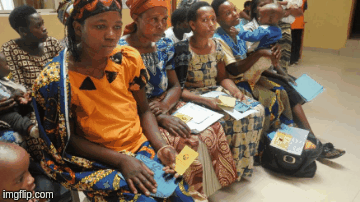

Ubudehe refers to the long-standing Rwandan practice and culture of collective action and mutual support to solve problems within a community, according to a recent academic research paper.
Information is the major thing in everybody's personal life. Ubudehe helps Rwandan citizen to access things basing on thier living style, in every aspect of life. It also helps people from knowing that they have equal rights where someone can not be in charge of something above his/her acapabilities.
Ubudehe was launched into Rwandan life it was as way to better involve communities in their development by setting up participatory problem solving mechanisms. The program was seen as a way to strengthen democratic processes and good governance through greater community involvement in decision making. Ubudehe creates opportunities for people at all levels of society, especially the village level, to interact with one another, share ideas, create institutions and make decisions for their collective development.
This government statment has been a way of facilitating everybody according to his/her right and the limitation of his capabilities. Yes.It is way of poverty reduction where the government support people with lower living founds by offering and giving them what they need (eg: Gira inka Munyarwanda) according to their ubudehe categories. Others, are able to access other government founds like asking for loan or gain a scholarship for thier studies.